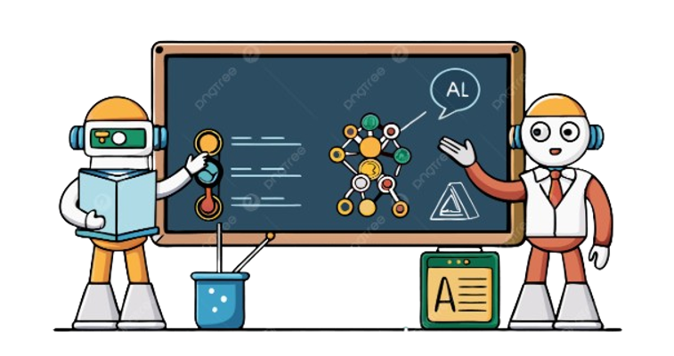
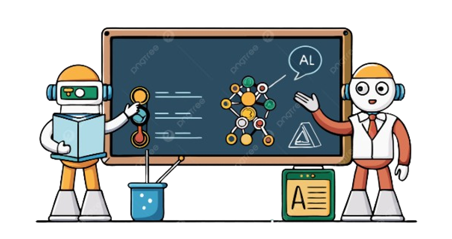
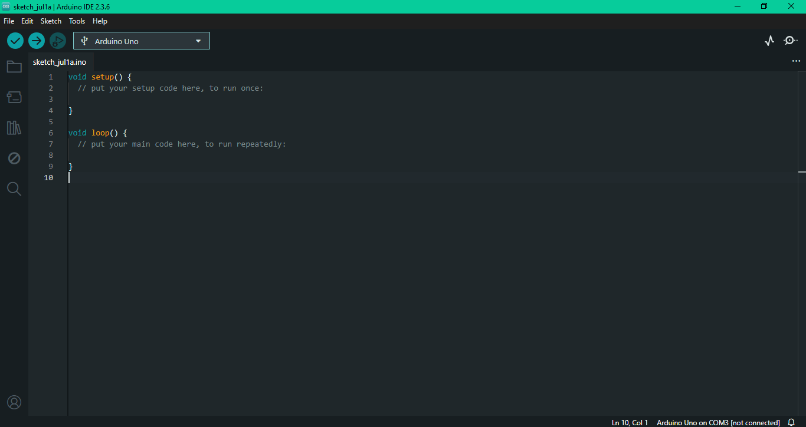
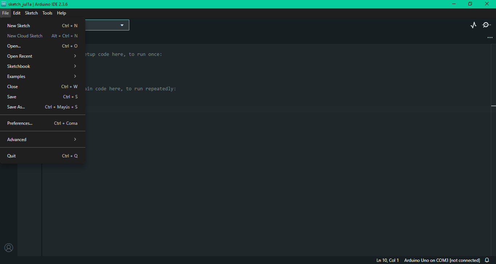
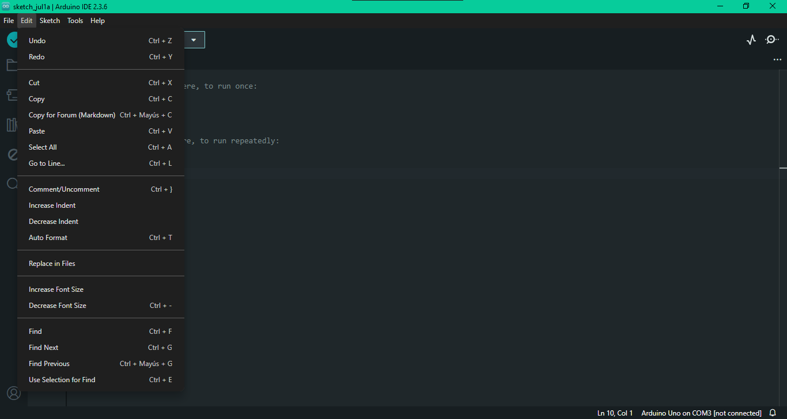
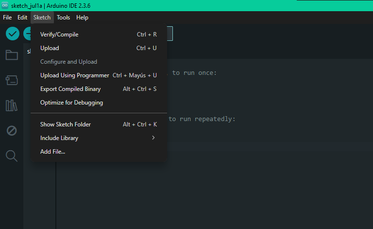
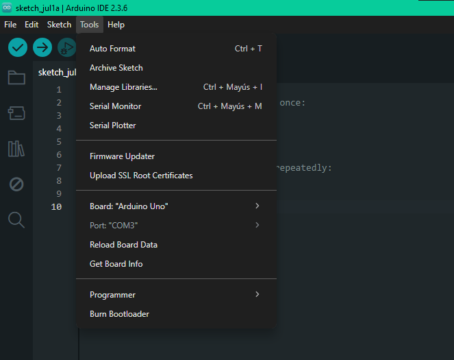
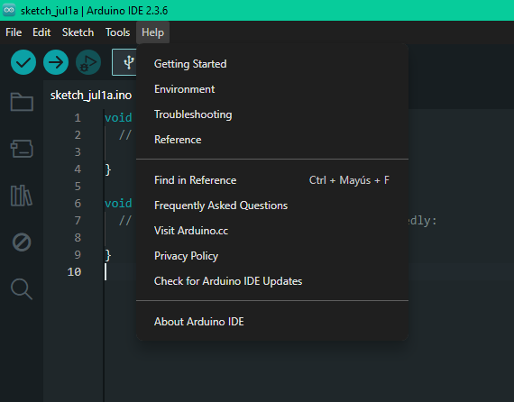

📋 Introducción
En esta semana 1 de aprendizaje nos adentraremos en los conceptos básicos de robótica educativa y plataformas de programación, con la finalidad de sentar bases sólidas en estos conceptos básicos para el desarrollo del proyecto.

En esta semana 1 de aprendizaje nos adentraremos en los conceptos básicos de robótica educativa y plataformas de programación, con la finalidad de sentar bases sólidas en estos conceptos básicos para el desarrollo del proyecto.

La robótica educativa es una metodología de enseñanza que permite a los estudiantes construir y programar robots como medio para desarrollar habilidades cognitivas, técnicas y socioemocionales. Se basa en el enfoque STEM (Ciencia, Tecnología, Ingeniería y Matemáticas) y busca fomentar un aprendizaje significativo, activo y contextualizado. Esta herramienta facilita la comprensión de conceptos abstractos al convertirlos en experiencias tangibles y prácticas (Bers & Sullivan, 2021).
La robótica ha dejado de ser un elemento exclusivo de la industria o la ciencia para formar parte de múltiples contextos cotidianos. Su aplicación se extiende a sectores como la medicina, la educación, la agricultura, la seguridad y el hogar (Qu & Fok, 2022).

Arduino IDE (Integrated Development Environment) es un entorno de desarrollo de software que permite escribir, crear y depurar programas en placas Arduino. Esta plataforma utiliza un lenguaje de programación basado en C++ y se ha consolidado como una de las herramientas más accesibles para introducir a los estudiantes en la lógica de la programación y el control de dispositivos físicos (Rivas et al., 2022). La plataforma Arduino IDE incluye un editor de texto, un compilador, una biblioteca de funciones y herramientas de depuración para facilitar el desarrollo de proyectos en Arduino. Además, la plataforma es compatible con sistemas operativos como Windows, Mac OS X y Linux, lo que la hace accesible para una amplia comunidad de programadores y entusiastas de la electrónica.

Fritzing es una herramienta de diseño electrónico que permite a los estudiantes crear esquemas de circuitos visualmente, utilizando representaciones gráficas de placas, cables, resistencias, LEDs y otros componentes. Esta plataforma resulta especialmente útil para planificar y documentar montajes de circuitos antes de implementarlos físicamente, facilitando la comprensión de conexiones y estructuras electrónicas (Montoya, 2023).






Escriba su contenido...
Escriba su contenido...
Obra publicada con Licencia Creative Commons Reconocimiento Compartir igual 4.0